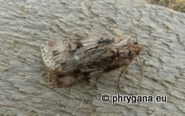
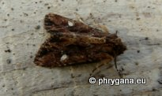
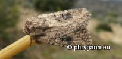
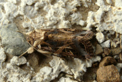
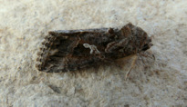
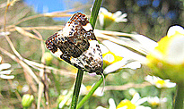

")

| PHRYGANA | Fauna | Flora | Galles | liste des espèces |
contact -
info - commentaires phrygana1 (at) gmail.com |
| Particularités crétoises | nouveautés | Mines | ressources naturelles |
| les Noctuidae de Crète |
|
| Noctuinae |
| En Crète, on compte 11 genres et 37 (sous)espèces au moins dans la tribu des Noctuini (sous-famille des Noctuinae) | ||||
|  |
|
|
||
| Agrotis herzogi | Agrotis ipsilon | Agrotis puta | Noctua comes | Peridroma saucia |
| En Crète, on compte 14 genres et 28 (sous)espèces au moins dans la tribu des Xylenini (sous-famille des Noctuinae). | ||||
 |
 australis (Boisduval 1829)") |
 nigra cinerea Staudinger 1901") |
 |
 |
| Agrochola lychnidis | Aporophyla australis | Aporophyla nigra cinerea | Chloantha hyperici | Polymixis leuconota |
| En Crète, on compte 2 genres et 14 (sous)espèces au moins dans la tribu des Leucaniini (sous-famille des Noctuinae). | ||||
 unipuncta (Haworth 1809)") |
||||
| Leucania loreyi | Leucania putrescens | Mythimna unipuncta | Mythimna l-album | |
|  |
 sicula (Treitschke 1835)") |
|||
| Mythimna languida | Mythimna prominens | Mythimna sicula | ||
| En Crète, on compte 1 genre et 3 (sous)espèces au moins dans la tribu des Prodeniini (sous-famille des Noctuinae). | ||||
|  | ||||
| Spodoptera exigua | Spodoptera littoralis | |||
| En Crète, on compte 9 (sous)espèces dans les Plusiinae. | ||||
") |
") |
 |
 | |
| Abrostola triplasia | Autographa gamma | Thysanoplusia circumscripta | Thysanoplusia daubei | Trichoplusia ni |
| En Crète, on compte 3 (sous)espèces dans les Acontiinae | En Crète, on compte 1 genre et 1 espèce dans les Condicinae | ||||
|
 |
") |
||||
| Acontia lucida | Condica viscosa | ||||
| En Crète, on compte 4 espèces au moins dans les Acronictinae. There are at least 4 species in the Cretan Acronictinae. | ||||
") |
||||
| Acronicta psi | ||||
| En Crète, on compte 4 (sous)espèces au moins dans les Heliothinae | ||||
") |
||||
| Helicoverpa armigera | Heliothis peltigera | |||
| En Crète, on compte 4 espèces au moins dans les Cuculliinae. | ||||
 |
 verbasci (Linnaeus 1758)") |
|||
| Cucullia calendulae | Cucullia verbasci | |||
| En Crète, on compte 1 espèce au moins dans les Metoponiinae | ||
|
|
||
| Tyta luctuosa |
| En Crète, on compte 3 espèces au moins dans les Oncocnemidinae | ||||
|
|
||||
| Omphalophana anatolica | ||||
| En Crète, on compte 1 espèce au moins dans les Eustrotiinae. | En Crète, on compte 3 espèces au moins dans les Amphipyrinae. T | ||
|
|
|||
| Pseudozarba bipartita | Amphipyra effusa | ||
| 10 juin 2013 |
| © paul fontaine -- © Phrygana.eu 2007 -- 2013 |